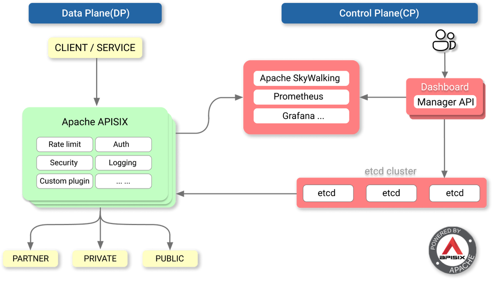
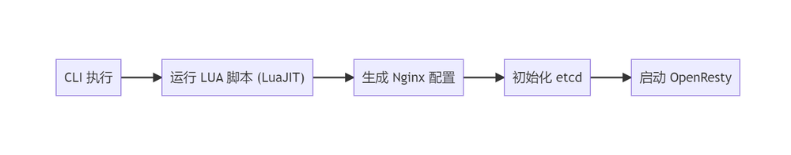
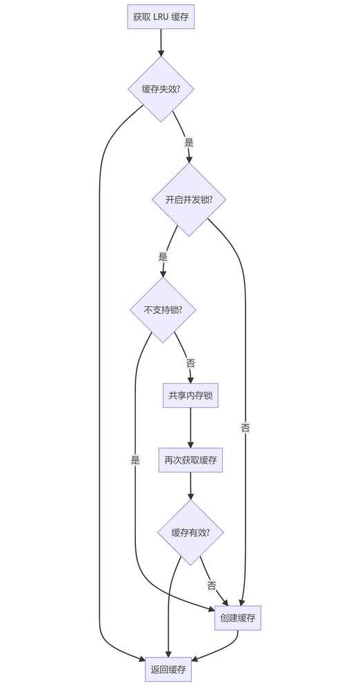
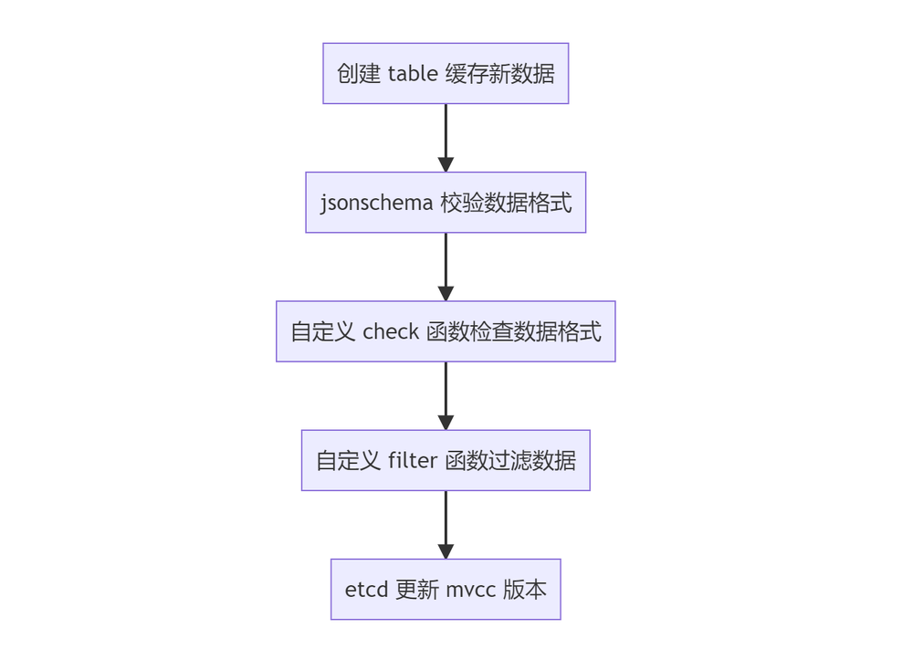
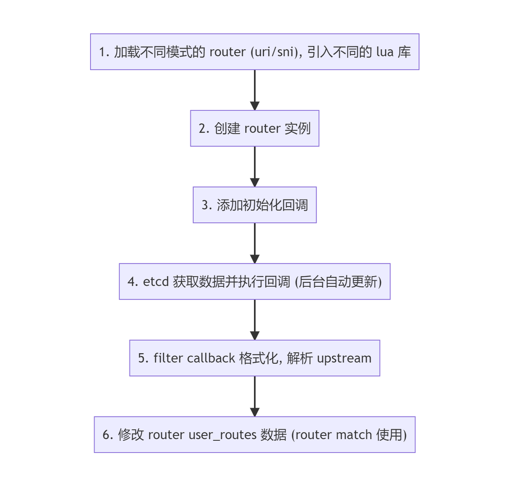
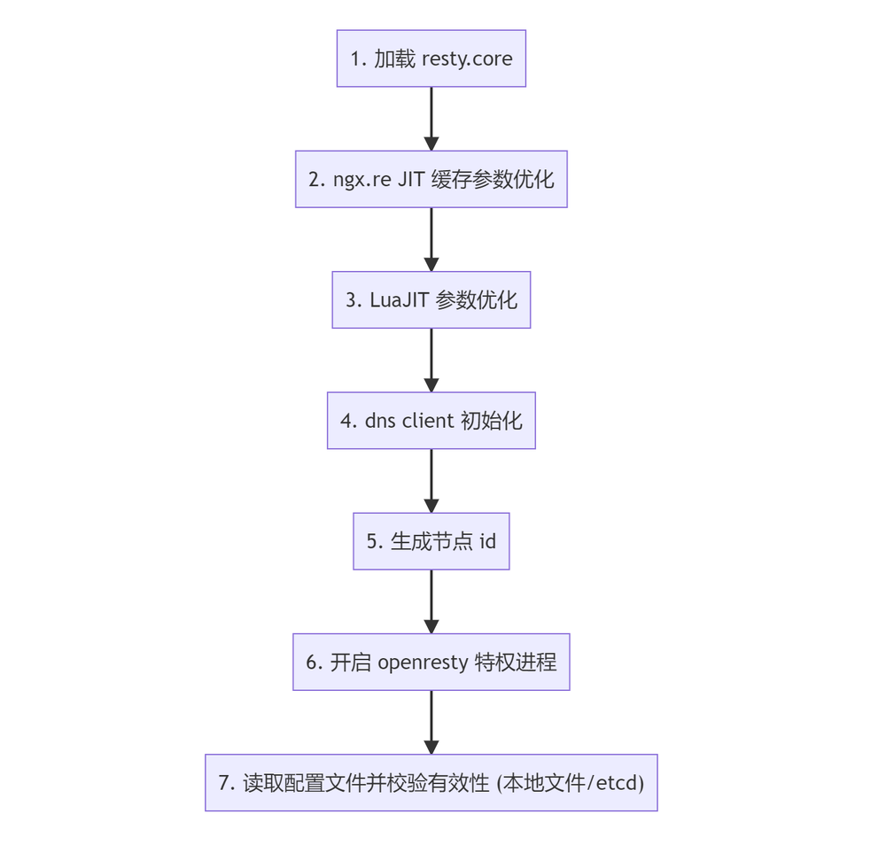
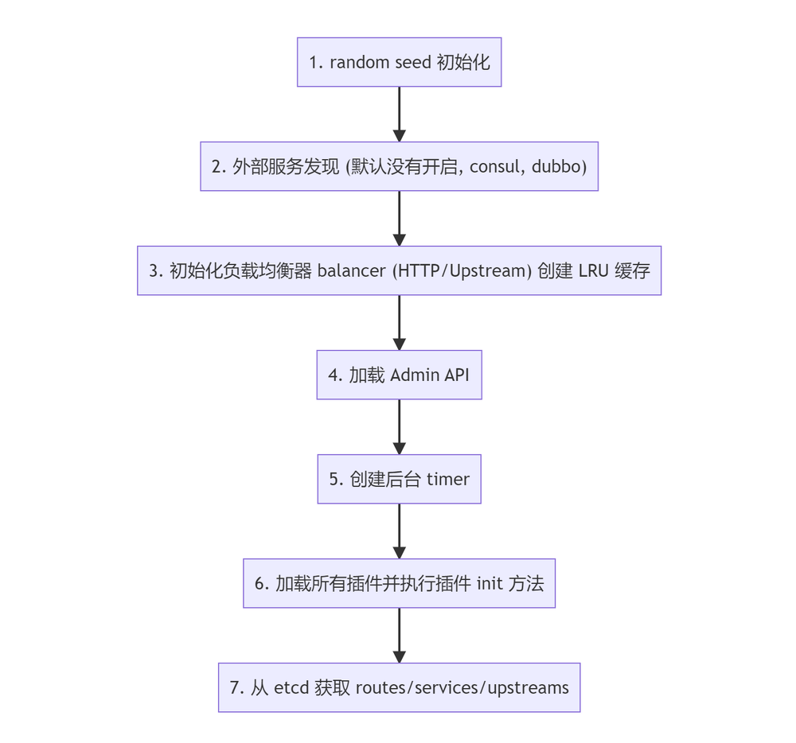
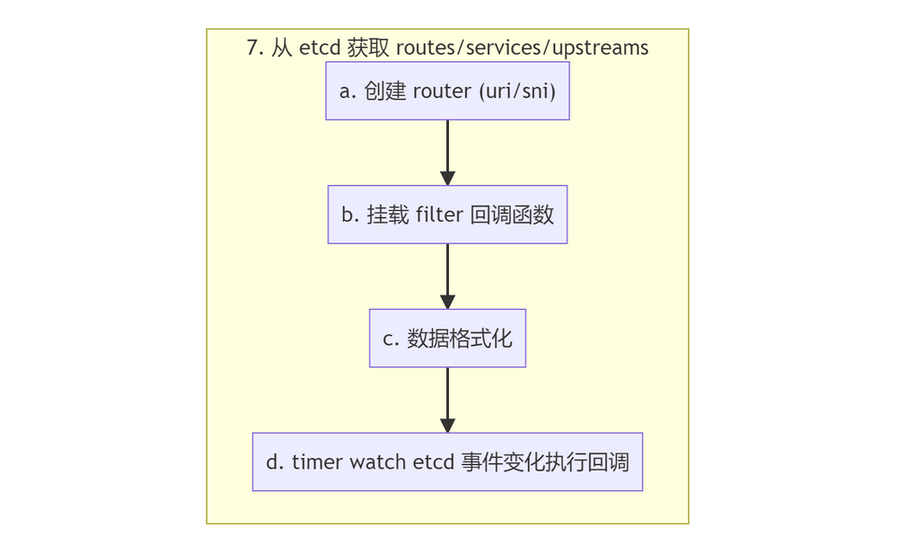
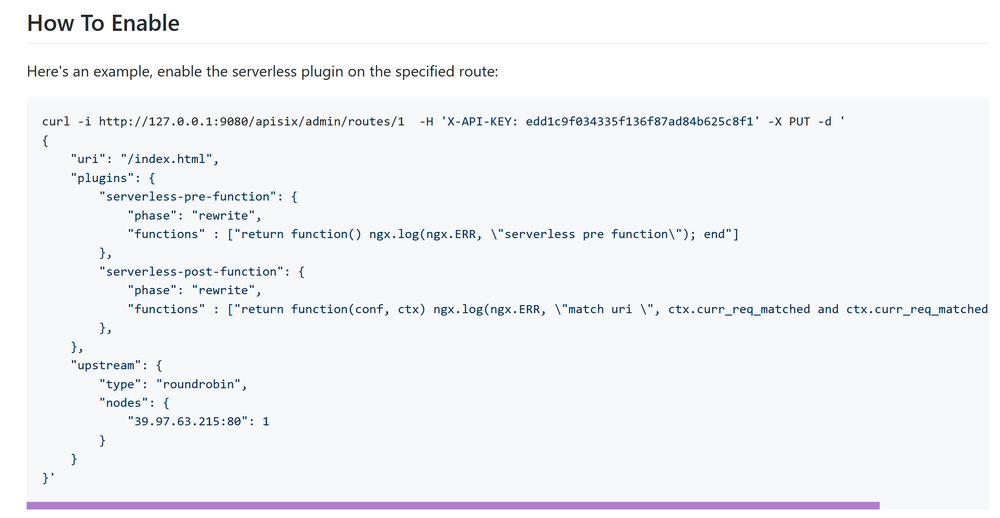

本文基于 APISIX 2.6 版本进行源码分析，源码阅读注释仓库: review，分析主要流程以及核心机制。
1. APISIX 概述
APISIX 与 Kong 类似，是一个基于 OpenResty 构建的 API 网关，如果你熟悉 OpenResty，你大概能猜到本文会讲述 APISIX 在 OpenResty 的几大生命周期中， 做了什么动作来进行路由匹配、服务发现、负载均衡以及加载插件。 如果你还想了解 Kong 网关是如何运作的，可以查看我的另一篇文章 Kong 源码分析。 当然，APISIX 不同于 Kong 的地方，例如 etcd 数据变化监听、强大的缓存机制、以及在性能优化上做的尝试，本文也会一一阐述。
1.1. 项目概述
APISIX 是基于 OpenResty 开发的 API 网关，与 OpenResty 的请求生命周期一致，APISIX 利用 Lua Nginx Module 提供的 *_by_lua 添加 Hook。
APISIX 抽象了 Route、Service、Upstream、Plugin、Consumer 等数据模型，与 Kong 网关如出一辙。

基本上可以看作 APISIX 是 Kong 网关的重构——运用大量 LuaJIT、OpenResty 技巧优化性能、简化复杂的数据结构、替换储存引擎为 etcd 等。

值得一提的是，在 APISIX 的一个 issue 中，项目开发者说不确定是什么原因，我们看看 Kong 网关是怎么解决的吧。
“How does Kong solve similar problems?"1
1.2. 生态概述
Kong 网关开源生态有的，APISIX 基本都有或者正在做。包含：Kubernetes Ingress Controller、Mesh、Dashboard。
插件方面比 Kong 开源版本多了 Skywalking APM 数据上报、Traffit 流量拆分、Mirror 流量镜像等功能。
2. 基本流程
本节概述 APISIX 的目录结构，以及其启动流程。
2.1. 目录结构
$ tree -L 2
.
├── apisix
│ ├── admin # Admin API
│ ├── api_router.lua
│ ├── balancer # 负载均衡器
│ ├── balancer.lua
│ ├── cli # CLI, Lua 脚本
│ ├── constants.lua # 常量
│ ├── consumer.lua
│ ├── control
│ ├── core # 主要是封装的公共方法
│ ├── core.lua
│ ├── debug.lua
│ ├── discovery # 服务发现, 支持 consul, eruka, dns
│ ├── http
│ ├── init.lua # _by_lua 函数入口
│ ├── patch.lua
│ ├── plugin_config.lua
│ ├── plugin.lua # 插件
│ ├── plugins
│ ├── router.lua # Router
│ ├── schema_def.lua # jsonschema 定义
│ ├── script.lua
│ ├── ssl
│ ├── ssl.lua
│ ├── stream
│ ├── timers.lua # timer 封装
│ ├── upstream.lua
│ └── utils
├── bin
│ └── apisix # apisix CLI, shell 脚本
├── ci # CI 脚本
├── conf # 默认配置文件
├── deps
├── docs
├── Makefile # 快捷指令
├── rockspec # luarocks 包管理
├── t # Test::Nginx 测试
└── utils # Shell 脚本
2.2. 启动流程

CLI 默认会用 LuaJIT 启动，若版本不够便退回到 Lua 5.1 解释器执行。
# 查找 APISIX LUA 包路径
# shell -s 判断文件是否存在且 size > 0
# ref: https://stackoverflow.com/questions/53319817/what-is-the-meaning-of-n-z-x-l-d-etc-in-shell-script
if [ -s './apisix/cli/apisix.lua' ]; then
...
fi
# shell -e 判断文件是否存在
if [[ -e $OR_EXEC && "$OR_VER" =~ "1.19" ]]; then
# use the luajit of openresty
echo "$LUAJIT_BIN $APISIX_LUA $*"
exec $LUAJIT_BIN $APISIX_LUA $*
elif [[ "$LUA_VERSION" =~ "Lua 5.1" ]]; then
# OpenResty version is not 1.19, use Lua 5.1 by default
# shell &* 传递所有 args
# ref: https://stackoverflow.com/questions/4824590/propagate-all-arguments-in-a-bash-shell-script
echo "lua $APISIX_LUA $*"
exec lua $APISIX_LUA $*
fi
启动过程中：
- 调用
popen执行 CMD 命令； - 使用 luasocket 库发起 HTTP 请求（非 OpenResty 运行时）；
- 使用 ltn12 sink 进行流处理；
- 创建 etcd prefix，value 为
init；
3. 基本类型操作
基本上为了追求极致性能，能用 FFI 调用实现的都用了。
3.1. 字符串
使用 FFI 调用 libc 函数 memcmp 进行字符串比较内存地址的前 n 长度是否相同。
local ffi = require("ffi")
local C = ffi.C
-- ref: https://www.cplusplus.com/reference/cstring/memcmp/
-- ref: https://www.tutorialspoint.com/c_standard_library/c_function_memcmp.htm
ffi.cdef[[
int memcmp(const void *s1, const void *s2, size_t n);
]]
接收类型是 const void *，不可变类型可以直接传入 Lua string 类型。
如果你的 C 函数接受
const char *或者等价的const unsigned char/int8_t/... *这样的参数类型， 可以直接传递 Lua string 进去，而无需另外准备一个ffi.new申请的数组。2
string 前缀比较，比较 s, prefix 内存地址的前 n (#prefix) 长度是否相同。
-- 用 ffi 扩展 string 方法
function _M.has_prefix(s, prefix)
if type(s) ~= "string" or type(prefix) ~= "string" then
error("unexpected type: s:" .. type(s) .. ", prefix:" .. type(prefix))
end
if #s < #prefix then
return false
end
-- 比较 s, prefix 内存地址的前 n (#prefix) 长度是否相同
local rc = C.memcmp(s, prefix, #prefix)
return rc == 0
end
同理比较后缀：
C.memcmp(ffi_cast("char *", s) + #s - #suffix, suffix, #suffix)
3.2. Table
Table 是 Lua 中最常用的类型了，与其他语言比较的话相当于 PHP 的 Array 一样实用。
Lua Table 需要注意的地方其一：
table.new(narray, nhash)
这个函数，会预先分配好指定的数组和哈希的空间大小，而不是在插入元素时自增长，这也是它的两个参数 narray 和 nhash 的含义。 如果不使用这个函数，自增长是一个代价比较高的操作，会涉及到空间分配、resize 和 rehash 等，我们应该尽量避免。
table.new 的文档并没有出现在 LuaJIT 的官网，而是深藏在 GitHub 项目的 扩展文档 里，用谷歌也很难找到，所以很多人并不知道这个函数的存在。
超出预设的空间大小，也可以正常使用，只不过性能会退化，也就失去了使用 table.new 的意义。
需要根据实际场景，来预设好 table.new 中数组和哈希空间的大小，这样才能在性能和内存占用上找到一个平衡点。3
Lua Table 需要注意的地方其二：
table.insert 虽然是一个很常见的操作，但性能并不乐观。 如果不是根据指定下标来插入元素，那么每次都需要调用 LuaJIT 的 lj_tab_len 来获取数组的长度，以便插入队尾。获取 table 长度的时间复杂度为 O(n) 。
参考 APISIX 作者给 ingress-nginx 项目提的 Table 操作优化 PR：used table functions of LuaJIT for better performance.
OpenResty Fork 的 LuaJIT 新增的 table 函数4：
- table.isempty
- table.isarray
- table.nkeys
- table.clone
回到 APISIX 封装的 Table 操作符：
-- 自行构建 index 插入 table, 比 table.insert 效率高
function _M.insert_tail(tab, ...)
local idx = #tab
-- 遍历输入的参数
for i = 1, select('#', ...) do
idx = idx + 1
tab[idx] = select(i, ...)
end
return idx
end
select('#', ...) 获取输入参数的数量，select(i, ...) 获取第 n 个参数，Table 的遍历中大量使用该结构。
try_read_attr 实现了 path.node.x 的 table 访问方式，便于读取多层级配置项。
function _M.try_read_attr(tab, ...)
for i = 1, select('#', ...) do
local attr = select(i, ...)
if type(tab) ~= "table" then
return nil
end
tab = tab[attr]
end
return tab
end
使用示例：
local size = core_tab.try_read_attr(local_conf, "graphql", "max_size")
if size then
max_size = size
end
4. 工具类
APISIX 封装了许多工具类，这些工具共同组成了 APISIX 的 PDK（Plugin Development Kit），利用这些方法，插件开发能够增速许多。
4.1. JSON 操作
local delay_tab = setmetatable({data = "", force = false}, {
__tostring = function(self)
local res, err = encode(self.data, self.force)
if not res then
ngx.log(ngx.WARN, "failed to encode: ", err,
" force: ", self.force)
end
return res
end
})
-- this is a non-thread safe implementation
-- it works well with log, eg: log.info(..., json.delay_encode({...}))
function _M.delay_encode(data, force)
delay_tab.data = data
delay_tab.force = force
return delay_tab
end
设置了元表的 __tostring 方法，在字符串转换时才使用匿名函数调用 json.encode，在日志打印时，被忽略的日志会不执行 JSON 压缩，避免额外的性能损耗。
4.2. LRU 缓存
lua-resty-lrucache 在写入时会清理 TTL 过期的缓存，读时如果数据过期了，会作为第二个参数返回：
function _M.get(self, key)
local hasht = self.hasht
local val = hasht[key]
if val == nil then
return nil
end
local node = self.key2node[key]
-- print(key, ": moving node ", tostring(node), " to cache queue head")
local cache_queue = self.cache_queue
queue_remove(node)
queue_insert_head(cache_queue, node)
if node.expire >= 0 and node.expire < ngx_now() then
-- print("expired: ", node.expire, " > ", ngx_now())
return nil, val, node.user_flags
end
return val, nil, node.user_flags
end

local function fetch_valid_cache(lru_obj, invalid_stale, item_ttl,
item_release, key, version)
local obj, stale_obj = lru_obj:get(key)
if obj and obj.ver == version then
return obj
end
-- 如果 TTL 到期的数据版本号仍一致, 重新 set 该缓存
if not invalid_stale and stale_obj and stale_obj.ver == version then
lru_obj:set(key, stale_obj, item_ttl)
return stale_obj
end
-- release 回调
if item_release and obj then
item_release(obj.val)
end
return nil
end
-- 返回创建 LRU 的匿名函数
local function new_lru_fun(opts)
local item_count, item_ttl
if opts and opts.type == 'plugin' then
item_count = opts.count or PLUGIN_ITEMS_COUNT
item_ttl = opts.ttl or PLUGIN_TTL
else
item_count = opts and opts.count or GLOBAL_ITEMS_COUNT
item_ttl = opts and opts.ttl or GLOBAL_TTL
end
local item_release = opts and opts.release
local invalid_stale = opts and opts.invalid_stale
-- 是否使用并发锁
local serial_creating = opts and opts.serial_creating
-- 参数为 LRU size
local lru_obj = lru_new(item_count)
return function (key, version, create_obj_fun, ...)
-- 不支持的 yielding 的 Nginx phase 无法使用 resty.lock
if not serial_creating or not can_yield_phases[get_phase()] then
local cache_obj = fetch_valid_cache(lru_obj, invalid_stale,
item_ttl, item_release, key, version)
if cache_obj then
return cache_obj.val
end
local obj, err = create_obj_fun(...)
if obj ~= nil then
lru_obj:set(key, {val = obj, ver = version}, item_ttl)
end
return obj, err
end
local cache_obj = fetch_valid_cache(lru_obj, invalid_stale, item_ttl,
item_release, key, version)
if cache_obj then
return cache_obj.val
end
-- 当缓存失效时获取锁
-- 创建共享内存 lock
local lock, err = resty_lock:new(lock_shdict_name)
if not lock then
return nil, "failed to create lock: " .. err
end
local key_s = tostring(key)
log.info("try to lock with key ", key_s)
-- 获取 lock
local elapsed, err = lock:lock(key_s)
if not elapsed then
return nil, "failed to acquire the lock: " .. err
end
-- 再次获取缓存
cache_obj = fetch_valid_cache(lru_obj, invalid_stale, item_ttl,
nil, key, version)
if cache_obj then
lock:unlock()
log.info("unlock with key ", key_s)
return cache_obj.val
end
local obj, err = create_obj_fun(...)
if obj ~= nil then
lru_obj:set(key, {val = obj, ver = version}, item_ttl)
end
lock:unlock()
log.info("unlock with key ", key_s)
return obj, err
end
end
这段代码关联到两个 PR:
- bugfix(lrucache): when creating cached objects, use resty-lock to avoid repeated creation.
- change: make lrucache lock optional
使用 lua-resty-lock 通过共享内存竞争锁，用在缓存中避免缓存击穿，当该 Lib 出于 Luajit 限制，无法在 init_by_lua, init_worker_by_lua, header_filter_by_lua, body_filter_by_lua, balancer_by_lua, log_by_lua 阶段中使用。
引入的 serial_creating 属性用于判断插件是否需要启用锁。
Kong 使用的 lua-resty-mlcache 库内部也使用 resty.lock 防止缓存击穿（可选）。
4.3. 后台任务
两个地方默认初始化了定时器（Nginx Timer）执行后台任务。
init_by_lua阶段创建 OpenResty 特权进程，负责执行特定的后台任务，不会干扰其他 Worker 进程，权限相当于 root；init_by_worker阶段创建 Background Timer，执行并发执行后台任务。
OpenResty 特权进程不能处理请求，只能由 Timer 触发，逻辑上编写 if type(ngx.process.type()) == "privileged agent" 只在特权进程中执行操作。5
Enables the privileged agent process in Nginx.
The privileged agent process does not listen on any virtual server ports like those worker processes. And it uses the same system account as the nginx master process, which is usually a privileged account like
root.The
init_worker_by_lua*directive handler still runs in the privileged agent process. And one can use the type function provided by this module to check if the current process is a privileged agent.6
-- worker 默认后台运行的 timer, 执行各种后台任务
local function background_timer()
if core.table.nkeys(timers) == 0 then
return
end
local threads = {}
for name, timer in pairs(timers) do
core.log.info("run timer[", name, "]")
-- 开启协程执行
local th, err = thread_spawn(timer)
if not th then
core.log.error("failed to spawn thread for timer [", name, "]: ", err)
goto continue
end
core.table.insert(threads, th)
::continue::
end
local ok, err = thread_wait(unpack(threads))
if not ok then
core.log.error("failed to wait threads: ", err)
end
end
function _M.init_worker()
local opts = {
each_ttl = 0,
sleep_succ = 0,
check_interval = check_interval, -- 默认间隔为 1 秒
}
local timer, err = core.timer.new("background", background_timer, opts)
if not timer then
core.log.error("failed to create background timer: ", err)
return
end
core.log.notice("succeed to create background timer")
end
APISIX 引入特权进程的一个目的在于实现 Log Rotate 插件功能。
5. 请求生命周期
5.1. ctx
Use
ngx.ctxwherever you can.ngx.varis much more expensive and is also limited to string values. The latter should only be used to exchange data with other nginx C modules.7
APISIX 中使用缓存 ngx.var 获取的结果， 在不同生命周期中传递。使用 lua-var-nginx-module Nginx C 模块和 FFI 获取变量，在没有开启 Nginx C 模块的情况下回退到 ngx.var 方式获取。APISIX 默认没有在构建脚本中加载 C 模块，提交的 PR feat: add lua-var-nginx-module 在编译 OpenResty 时添加了该模块。
function _M.set_vars_meta(ctx)
-- 从 table 池中获取/创建一个 hash 长度为 32 的 table
local var = tablepool.fetch("ctx_var", 0, 32)
if not var._cache then
var._cache = {}
end
-- 通过 resty.core.base 获取原始 request C 指针 (?)
-- ref: https://github.com/openresty/lua-resty-core/blob/master/lib/resty/core/base.lua
var._request = get_request()
-- 绑定元表
setmetatable(var, mt)
-- 缓存到 ngx ctx 中
ctx.var = var
end
使用 tablepool 从 Lua table 池中获取 table，避免频繁分配内存。
do
-- 获取特殊 var 类型的方法
local var_methods = {
method = ngx.req.get_method,
-- ref: https://github.com/cloudflare/lua-resty-cookie
cookie = function () return ck:new() end
}
local ngx_var_names = {
upstream_scheme = true,
upstream_host = true,
...
var_x_forwarded_proto = true,
}
local mt = {
-- 重载 hash 元方法
-- t 是 self
__index = function(t, key)
-- 若 cache table 存在直接返回
local cached = t._cache[key]
if cached ~= nil then
return cached
end
if type(key) ~= "string" then
error("invalid argument, expect string value", 2)
end
local val
-- 如果是特殊类型, 使用特定方法获取
local method = var_methods[key]
if method then
val = method()
elseif core_str.has_prefix(key, "cookie_") then
-- 通过 var_methods 访问到 resty.cookie
local cookie = t.cookie
if cookie then
local err
val, err = cookie:get(sub_str(key, 8))
if not val then
log.warn("failed to fetch cookie value by key: ",
key, " error: ", err)
end
end
elseif core_str.has_prefix(key, "http_") then
key = key:lower()
key = re_gsub(key, "-", "_", "jo")
-- 最终通过 ngx.var 获取
val = get_var(key, t._request)
elseif core_str.has_prefix(key, "graphql_") then
-- trim the "graphql_" prefix
key = sub_str(key, 9)
val = get_parsed_graphql(t)[key]
elseif key == "route_id" then
val = ngx.ctx.api_ctx and ngx.ctx.api_ctx.route_id
elseif key == "service_id" then
val = ngx.ctx.api_ctx and ngx.ctx.api_ctx.service_id
elseif key == "consumer_name" then
val = ngx.ctx.api_ctx and ngx.ctx.api_ctx.consumer_name
elseif key == "route_name" then
val = ngx.ctx.api_ctx and ngx.ctx.api_ctx.route_name
elseif key == "service_name" then
val = ngx.ctx.api_ctx and ngx.ctx.api_ctx.service_name
elseif key == "balancer_ip" then
val = ngx.ctx.api_ctx and ngx.ctx.api_ctx.balancer_ip
elseif key == "balancer_port" then
val = ngx.ctx.api_ctx and ngx.ctx.api_ctx.balancer_port
else
val = get_var(key, t._request)
end
if val ~= nil then
t._cache[key] = val
end
-- 为空返回 nil
return val
end,
__newindex = function(t, key, val)
if ngx_var_names[key] then
ngx_var[key] = val
end
-- log.info("key: ", key, " new val: ", val)
t._cache[key] = val
end,
}
部分 APISIX 路由匹配的内部参数在其他阶段注入。
5.2. headers
-- 用 ngx.ctx table 缓存 headers, 避免再进行一次 ffi 调用
local function _headers(ctx)
if not ctx then
ctx = ngx.ctx.api_ctx
end
local headers = ctx.headers
if not headers then
headers = get_headers()
ctx.headers = headers
end
return headers
end
用到了上述的 ctx 库。
6. etcd
etcd 在 APISIX 中作用相同与 PostgreSQL 之于 Kong，内部使用 lua-resty-etcd 作为客户端，使用 timer 定时执行和长轮询获取跟踪 etcd 中数据的变化。
这里的优化点与 Kong 一样，在 init_by_lua 阶段进行数据的 warm up，之后数据会 fork 到其他的进程中。
It does not really make much sense to use this library in the context of init_by_lua because the cache will not get shared by any of the worker processes (unless you just want to “warm up” the cache with predefined items which will get inherited by the workers via
fork()).8
6.1. 初始化
读取 etcd 数据到全局单例的 Lua table。
-- 初始化 etcd
function _M.init()
local local_conf, err = config_local.local_conf()
if not local_conf then
return nil, err
end
if table.try_read_attr(local_conf, "apisix", "disable_sync_configuration_during_start") then
return true
end
-- 获取 etcd cli
local etcd_cli, err = get_etcd()
if not etcd_cli then
return nil, "failed to start a etcd instance: " .. err
end
local etcd_conf = local_conf.etcd
local prefix = etcd_conf.prefix
-- 加载 etcd 所有数据到 lua table 中, 单例模式
local res, err = readdir(etcd_cli, prefix, create_formatter(prefix))
if not res then
return nil, err
end
return true
end
对数据进行格式化，存入 Lua table 中：
-- 创建格式化 formatter
local function create_formatter(prefix)
-- 返回闭包函数, 对 etcd 返回的结果进行格式化
-- 格式个毛, 这就是个 hook 函数
return function (res)
res.body.nodes = {}
local dirs
if is_http then
dirs = constants.HTTP_ETCD_DIRECTORY
else
dirs = constants.STREAM_ETCD_DIRECTORY
end
local curr_dir_data
local curr_key
for _, item in ipairs(res.body.kvs) do
if curr_dir_data then
-- 将匹配的内容插入 table
if core_str.has_prefix(item.key, curr_key) then
table.insert(curr_dir_data, etcd_apisix.kvs_to_node(item))
goto CONTINUE
end
curr_dir_data = nil
end
-- 截取 prefix 后的 key
local key = sub_str(item.key, #prefix + 1)
if dirs[key] then
-- single item
loaded_configuration[key] = {
body = etcd_apisix.kvs_to_node(item),
headers = res.headers,
}
else
-- 前缀一致
local key = sub_str(item.key, #prefix + 1, #item.key - 1) -- 去掉末尾的 /
-- ensure the same key hasn't been handled as single item
if dirs[key] and not loaded_configuration[key] then
loaded_configuration[key] = {
body = {
nodes = {},
},
headers = res.headers,
}
curr_dir_data = loaded_configuration[key].body.nodes
curr_key = item.key
end
end
::CONTINUE::
end
return res
end
end
这部分逻辑在 init_by_lua 执行，fork 到其他子进程。
6.2. 数据校验
schema_def.lua 文件中定义了所有储存数据结构的 schema 校验规则，使用 jsonschema 库进行数据校验。
core/schema.lua 中使用 LRU 缓存校验器。
load_full_data 函数加载数据结构所需的 etcd kvs，并进行数据转换、校验、格式化、执行回调。

local function load_full_data(self, dir_res, headers)
local err
local changed = false
if self.single_item then
-- table size 为 1
...
-- 执行逻辑与下面数组格式类似
else
if not dir_res.nodes then
dir_res.nodes = {}
end
self.values = new_tab(#dir_res.nodes, 0)
self.values_hash = new_tab(0, #dir_res.nodes)
for _, item in ipairs(dir_res.nodes) do
local key = short_key(self, item.key)
local data_valid = true
-- 数据格式校验...
-- schema 校验...
-- 过滤器...
if data_valid then
changed = true
insert_tab(self.values, item)
self.values_hash[key] = #self.values
item.value.id = key
item.clean_handlers = {}
-- 执行回调
if self.filter then
self.filter(item)
end
end
-- 更新 mvcc 版本
self:upgrade_version(item.modifiedIndex)
end
end
...
self.need_reload = false
end
6.3. 后台数据同步
利用 etcd watch 机制进行数据变更的同步。
-- 定时器自动同步 etcd 数据
local function _automatic_fetch(premature, self)
if premature then
return
end
local i = 0
while not exiting() and self.running and i <= 32 do
i = i + 1
local ok, err = xpcall(function()
if not self.etcd_cli then
local etcd_cli, err = get_etcd()
if not etcd_cli then
error("failed to create etcd instance for key ["
.. self.key .. "]: " .. (err or "unknown"))
end
self.etcd_cli = etcd_cli
end
-- 同步数据
local ok, err = sync_data(self)
if err then
if err ~= "timeout" and err ~= "Key not found"
and self.last_err ~= err then
log.error("failed to fetch data from etcd: ", err, ", ",
tostring(self))
end
if err ~= self.last_err then
self.last_err = err
self.last_err_time = ngx_time()
else
if ngx_time() - self.last_err_time >= 30 then
self.last_err = nil
end
end
ngx_sleep(self.resync_delay + rand() * 0.5 * self.resync_delay)
elseif not ok then
-- no error. reentry the sync with different state
ngx_sleep(0.05)
end
end, debug.traceback)
if not ok then
log.error("failed to fetch data from etcd: ", err, ", ",
tostring(self))
ngx_sleep(self.resync_delay + rand() * 0.5 * self.resync_delay)
break
end
end
-- 进行下一次循环
if not exiting() and self.running then
ngx_timer_at(0, _automatic_fetch, self)
end
end
6.4. 配置同步
封装上述的逻辑提供给 routes、plugins、services 等数据结构使用，每个数据结构监听自己的 prefix，同步数据并执行回调，通常在回调逻辑上触发更新，例如重新构建 Router、重新构建 plugins table 等。
-- etcd 配置创建
function _M.new(key, opts)
local local_conf, err = config_local.local_conf()
if not local_conf then
return nil, err
end
-- etcd 重新同步事件 5 秒, 与 Kong 重新 poll db 数据一致
local etcd_conf = local_conf.etcd
local prefix = etcd_conf.prefix
local resync_delay = etcd_conf.resync_delay
if not resync_delay or resync_delay < 0 then
resync_delay = 5
end
local automatic = opts and opts.automatic
local item_schema = opts and opts.item_schema
local filter_fun = opts and opts.filter
local timeout = opts and opts.timeout
local single_item = opts and opts.single_item
local checker = opts and opts.checker
local obj = setmetatable({
etcd_cli = nil,
key = key and prefix .. key,
automatic = automatic,
item_schema = item_schema,
checker = checker,
sync_times = 0,
running = true,
conf_version = 0,
values = nil,
need_reload = true,
routes_hash = nil,
prev_index = 0,
last_err = nil,
last_err_time = nil,
resync_delay = resync_delay,
timeout = timeout,
single_item = single_item,
filter = filter_fun,
}, mt)
if automatic then
-- timer 定时获取数据
if not key then
return nil, "missing `key` argument"
end
-- 从单例 table 获取 etcd 数据, 进行处理
if loaded_configuration[key] then
local res = loaded_configuration[key]
-- 清空 table
loaded_configuration[key] = nil -- tried to load
log.notice("use loaded configuration ", key)
local dir_res, headers = res.body, res.headers
-- 加载数据并校验数据, 过滤数据
load_full_data(obj, dir_res, headers)
end
-- 创建定时器自动同步
ngx_timer_at(0, _automatic_fetch, obj)
else
local etcd_cli, err = get_etcd()
if not etcd_cli then
return nil, "failed to start a etcd instance: " .. err
end
obj.etcd_cli = etcd_cli
end
if key then
created_obj[key] = obj
end
return obj
end
7. Router
APISIX 的 Router 匹配基于压缩字典树（Radix Tree）实现，主要使用 lua-resty-radixtree 库。内置多种解析模式，这里只关注 HTTP 默认的 radixtree_uri 实现。
7.1. 路由构建
core.config.new 调用的是 etcd 库（config_etcd.lua）维护的配置同步方法，返回原表，可以访问从 etcd 同步的数据。core.schema.route 包含了 route 这个数据结构的 schema 及校验规则，check_route 内部检查 route 直接绑定 plugin 的数据结构。
APISIX 引入 route 直接绑定 plugin 的简化配置，不需要额外创建 plugin 对象。
-- 初始化 router
function _M.init_worker(filter)
local user_routes, err = core.config.new("/routes", {
automatic = true, -- 自动同步
item_schema = core.schema.route,
checker = check_route,
filter = filter,
})
if not user_routes then
error("failed to create etcd instance for fetching /routes : " .. err)
end
return user_routes
end
filter 是回调函数，下述的流程中会注入。
7.2. 路由初始化
router.http_init_worker 中进行 Router 初始化。

-- attach common methods if the router doesn't provide its custom implementation
local function attach_http_router_common_methods(http_router)
...
if http_router.init_worker == nil then
http_router.init_worker = function (filter)
-- 添加路由
http_router.user_routes = http_route.init_worker(filter)
end
end
end
function _M.http_init_worker()
local conf = core.config.local_conf()
-- 默认的匹配模式
local router_http_name = "radixtree_uri"
local router_ssl_name = "radixtree_sni"
if conf and conf.apisix and conf.apisix.router then
router_http_name = conf.apisix.router.http or router_http_name
router_ssl_name = conf.apisix.router.ssl or router_ssl_name
end
-- 创建 router 实例
local router_http = require("apisix.http.router." .. router_http_name)
-- 修改 router 的 table
attach_http_router_common_methods(router_http)
-- 初始化路由
-- 调用 apisix.http.route.init_worker 方法
-- 从 etcd 获取数据并执行回调
-- filter 为格式化, 解析 upstream
router_http.init_worker(filter)
_M.router_http = router_http
local router_ssl = require("apisix.ssl.router." .. router_ssl_name)
router_ssl.init_worker()
_M.router_ssl = router_ssl
_M.api = require("apisix.api_router")
...
end
http_router.user_routes 储存在 router 的 table 中，会在路由匹配时用到（懒加载）。
7.3. 路由匹配
access_by_lua 阶段中进行路由匹配，将匹配结果（route、service）传递到 ctx 中供 balancer 请求上游。
do
local uri_routes = {}
local uri_router
local match_opts = {}
function _M.match(api_ctx)
-- 从 module 的 user_routes 属性获取路由, 在 etcd route 变化时回调添加
local user_routes = _M.user_routes
if not cached_version or cached_version ~= user_routes.conf_version then
uri_router = base_router.create_radixtree_uri_router(user_routes.values,
uri_routes, false)
cached_version = user_routes.conf_version
end
if not uri_router then
core.log.error("failed to fetch valid `uri` router: ")
return true
end
return base_router.match_uri(uri_router, match_opts, api_ctx)
end
end
radixtree 路由匹配库提供了匹配成功回调 handler，匹配成功后传递到 ctx 中。
core.table.insert(uri_routes, {
...
handler = function (api_ctx, match_opts)
api_ctx.matched_params = nil
api_ctx.matched_route = route
api_ctx.curr_req_matched = match_opts.matched
end
})
8. Balancer
Balancer 部分与 Kong 逻辑一致，甚至代码里函数名都一样，主要逻辑是 Service/Upstream 节点解析、负载均衡策略、健康检查与失败重试。
APISIX 支持的一特性是外部服务发现，Kong 中默认支持通过 DNS 解析 Service host，根据 AAAA、A、SRV 记录添加 IP 与优先级，APISIX 支持了从 consul、eruka 和其他注册中心获取 IP 地址列表，并同步节点数据（长轮询）。
8.1. 服务发现
如果 serivce host 是域名, 通过外部注册中心进行服务发现，获取上游 IP 列表。
function _M.set_by_route(route, api_ctx)
...
-- 如果 serivce host 是域名, 通过 discovery 发现, dns 解析
if up_conf.service_name then
...
-- 外部注册中心
local dis = discovery[up_conf.discovery_type]
if not dis then
return 500, "discovery " .. up_conf.discovery_type .. " is uninitialized"
end
-- 从注册中心数据源（缓存本地 table）获取 IP
local new_nodes, err = dis.nodes(up_conf.service_name)
if not new_nodes then
return HTTP_CODE_UPSTREAM_UNAVAILABLE, "no valid upstream node: " .. (err or "nil")
end
...
end
-- 将 upstream 节点信息存入 ctx
set_directly(api_ctx, up_conf.type .. "#upstream_" .. tostring(up_conf),
api_ctx.conf_version, up_conf)
local nodes_count = up_conf.nodes and #up_conf.nodes or 0
if nodes_count == 0 then
return HTTP_CODE_UPSTREAM_UNAVAILABLE, "no valid upstream node"
end
...
set_upstream_scheme(api_ctx, up_conf)
local ok, err = fill_node_info(up_conf, api_ctx.upstream_scheme, false)
if not ok then
return 503, err
end
...
local scheme = up_conf.scheme
if (scheme == "https" or scheme == "grpcs") and up_conf.tls then
...
end
return
end
8.2. 负载均衡
不同于 Kong 使用自己封装的 lua-resty-dns-client/balancer 作为负载均衡器，APISIX 基于 lua-resty-balancer 封装了负载均衡策略，基于 lua-resty-healthcheck（fork 版本）实现节点健康检查。
API 网关的负载均衡策略（Kong/APISIX）都是基于 OpenResty lua-resty-core/balancer 提供的负载均衡函数实现，set_current_peer 设置当前请求上游地址，set_more_tries 设置请求失败重试次数，get_last_failure 获取上一次请求失败结果判断是否需要继续重试，set_timeouts 设置单个请求超时时间。
set_balancer_opts 设置 Nginx Balancer 参数。
-- set_balancer_opts will be called in balancer phase and before any tries
local function set_balancer_opts(route, ctx)
local up_conf = ctx.upstream_conf
-- If the matched route has timeout config, prefer to use the route config.
local timeout = nil
if route and route.value and route.value.timeout then
timeout = route.value.timeout
else
if up_conf.timeout then
timeout = up_conf.timeout
end
end
-- 设置 Nginx 请求超时时间
if timeout then
local ok, err = set_timeouts(timeout.connect, timeout.send,
timeout.read)
if not ok then
core.log.error("could not set upstream timeouts: ", err)
end
end
local retries = up_conf.retries
if not retries or retries < 0 then
retries = #up_conf.nodes - 1
end
-- 设置 Nginx 失败重试次数
if retries > 0 then
local ok, err = set_more_tries(retries)
...
end
end
在 access_by_lua 阶段中服务发现，调用 balancer 库获取 peer 节点，balancer_by_lua 中从 ctx 中获取 peer 节点信息，访问后端节点，若失败重试（该阶段再次被调用），重新获取 peer 节点，重新创建请求（recreate_request()）再次访问后端节点。
9. Plugin
插件机制也与 Kong 类似，插件开发者可以定义 Schema 配置数据结构，以及 Handler 注入 Nginx 请求生命周期，API 网关提供核心的库供开发者使用（SDK）。
APISIX 相比 Kong，开源的插件较多，插件 Schema 便于编写，同时插件只需要单文件，而 Kong 的插件通常是单独一个仓库，不方便维护。但是考虑到插件需要单独的 Test::Nginx 单元测试，单独一个仓库也未尝不可（Kong 还说了以后会把 Github 项目主仓库的插件代码移到单独的仓库）。
具体各个阶段执行逻辑应该与 Kong 相同，即部分阶段插件开协程并发执行，部分阶段避免数据竞争，插件顺序执行。
值得注意的一点是 APISIX 生命周期里没有 rewrite_by_lua 阶段，插件实现的该阶段会在 access_by_lua 中优先于 access_by_lua 插件逻辑执行。
The apisix run both “.access” and “.rewrite” in the “access” phase.9
9.1. 插件加载
插件列表从本地 yaml 文件获取，同时监听本地文件变化，同步配置；插件配置信息从 etcd 获取。
local init_plugins_syncer
do
local plugins_conf
function init_plugins_syncer()
local err
-- 储存插件的配置信息, 一条 kv
plugins_conf, err = core.config.new("/plugins", {
automatic = true, -- 后台创建 timer watch etcd 自动同步配置
item_schema = core.schema.plugins,
single_item = true,
-- filter 方法中访问到 etcd kv 的 item, 这里进行插件加载的回调
-- 每次 etcd 插件配置变动, 自动同步
filter = function(item)
-- we need to pass 'item' instead of plugins_conf because
-- the latter one is nil at the first run
_M.load(item)
end,
})
if not plugins_conf then
error("failed to create etcd instance for fetching /plugins : " .. err)
end
end
end
插件列表会储存到 Lua table 中：
-- 加载插件
local function load(plugin_names)
local processed = {}
for _, name in ipairs(plugin_names) do
if processed[name] == nil then
processed[name] = true
end
end
core.log.warn("new plugins: ", core.json.delay_encode(processed))
-- 移除已经存在的 module
for name in pairs(local_plugins_hash) do
unload_plugin(name)
end
core.table.clear(local_plugins)
core.table.clear(local_plugins_hash)
-- 加载插件
for name in pairs(processed) do
load_plugin(name, local_plugins)
end
-- 插件排序, priority 越高的插件越先执行, 与 Kong 同样
-- sort by plugin's priority
if #local_plugins > 1 then
sort_tab(local_plugins, sort_plugin)
end
-- 打印调试日志
for i, plugin in ipairs(local_plugins) do
...
end
return true
end
插件配置信息 plugin_meta 也加载到 Lua table 中，在插件匹配的时候会获取。
9.2. 插件匹配
插件过滤，遍历插件列表，匹配开启的插件，O(n) 操作 plugin.filter(route) ：
-- 插件配置绑定
function _M.filter(user_route, plugins)
...
plugins = plugins or core.tablepool.fetch("plugins", 32, 0)
for _, plugin_obj in ipairs(local_plugins) do
local name = plugin_obj.name
local plugin_conf = user_plugin_conf[name]
-- 插件和插件配置存入
if type(plugin_conf) == "table" and not plugin_conf.disable then
core.table.insert(plugins, plugin_obj)
core.table.insert(plugins, plugin_conf)
end
end
trace_plugins_info_for_debug(plugins)
return plugins
end
9.3. 插件执行
这里以 access_by_lua 阶段插件执行逻辑为例，根据 Route、Service 匹配插件，创建临时 Table 储存 plugin 和 plugin_conf，存入 ctx 中。
-- 插件过滤, 遍历插件列表, 匹配开启的插件, O(n)
local plugins = plugin.filter(route)
api_ctx.plugins = plugins
-- fake 执行 rewrite 阶段
plugin.run_plugin("rewrite", plugins, api_ctx)
if api_ctx.consumer then
local changed
route, changed = plugin.merge_consumer_route(
route,
api_ctx.consumer,
api_ctx
)
core.log.info("find consumer ", api_ctx.consumer.username,
", config changed: ", changed)
if changed then
core.table.clear(api_ctx.plugins)
api_ctx.plugins = plugin.filter(route, api_ctx.plugins)
end
end
-- 执行 access 阶段
plugin.run_plugin("access", plugins, api_ctx)
10. 主流程
以 Nginx HTTP Subsystem 为例分析主要执行逻辑，其中一些核心逻辑已在上述小节中流程分析过。
10.1. init_by_lua

function _M.http_init(args)
require("resty.core")
if require("ffi").os == "Linux" then
require("ngx.re").opt("jit_stack_size", 200 * 1024)
end
require("jit.opt").start("minstitch=2", "maxtrace=4000",
"maxrecord=8000", "sizemcode=64",
"maxmcode=4000", "maxirconst=1000")
core.resolver.init_resolver(args)
-- 生成节点 ID
core.id.init()
-- 启用 openresty 的特权进程
local process = require("ngx.process")
local ok, err = process.enable_privileged_agent()
if not ok then
core.log.error("failed to enable privileged_agent: ", err)
end
-- 从 etcd / yaml 本地配置文件获取配置, etcd 有 init 函数
if core.config.init then
local ok, err = core.config.init()
if not ok then
core.log.error("failed to load the configuration: ", err)
end
end
end
10.2. init_worker_by_lua


function _M.http_init_worker()
local seed, err = core.utils.get_seed_from_urandom()
if not seed then
core.log.warn('failed to get seed from urandom: ', err)
seed = ngx_now() * 1000 + ngx.worker.pid()
end
math.randomseed(seed)
-- for testing only
core.log.info("random test in [1, 10000]: ", math.random(1, 10000))
-- 进程间事件通信
local we = require("resty.worker.events")
local ok, err = we.configure({shm = "worker-events", interval = 0.1})
if not ok then
error("failed to init worker event: " .. err)
end
-- 服务发现 lib
local discovery = require("apisix.discovery.init").discovery
-- 默认没有开启服务发现
if discovery and discovery.init_worker then
discovery.init_worker()
end
-- 初始化负载均衡器, 方法为空
require("apisix.balancer").init_worker()
-- 负载均衡器
load_balancer = require("apisix.balancer")
-- TODO admin 流程分析
require("apisix.admin.init").init_worker()
-- 注册全局 timer
require("apisix.timers").init_worker()
-- 加载所有插件并执行插件 init
plugin.init_worker()
-- 初始化 router, 并加载 routes
router.http_init_worker()
-- 初始化 services, 加载 services
require("apisix.http.service").init_worker()
-- 加载插件配置
plugin_config.init_worker()
-- consumer 加载
require("apisix.consumer").init_worker()
if core.config == require("apisix.core.config_yaml") then
core.config.init_worker()
end
require("apisix.debug").init_worker()
-- upstreams 加载
apisix_upstream.init_worker()
require("apisix.plugins.ext-plugin.init").init_worker()
local_conf = core.config.local_conf()
if local_conf.apisix and local_conf.apisix.enable_server_tokens == false then
ver_header = "APISIX"
end
end
10.3. access_by_lua
-- access_by_lua 阶段, apisix 没有 rewrite_by_lua
-- ref: https://github.com/apache/apisix/issues/1120
-- ref: https://github.com/apache/apisix/issues/1120#issuecomment-584949073
function _M.http_access_phase()
local ngx_ctx = ngx.ctx
...
-- 从 table 缓存池中获取 table
-- always fetch table from the table pool, we don't need a reused api_ctx
local api_ctx = core.tablepool.fetch("api_ctx", 0, 32)
-- 将 table 储存在 ngx.ctx 中, 下一个阶段共享
ngx_ctx.api_ctx = api_ctx
-- 绑定 metatable
core.ctx.set_vars_meta(api_ctx)
...
-- router 路由匹配
router.router_http.match(api_ctx)
-- run global rule
plugin.run_global_rules(api_ctx, router.global_rules, nil)
...
local enable_websocket = route.value.enable_websocket
-- route 插件配置绑定
if route.value.plugin_config_id then
...
route = plugin_config.merge(route, conf)
end
-- 获取对应的 service
if route.value.service_id then
local service = service_fetch(route.value.service_id)
...
if enable_websocket == nil then
enable_websocket = service.value.enable_websocket
end
else
...
end
api_ctx.route_id = route.value.id
api_ctx.route_name = route.value.name
-- 执行 script
if route.value.script then
script.load(route, api_ctx)
script.run("access", api_ctx)
else
-- 插件过滤, 遍历插件列表, 匹配开启的插件, O(n)
local plugins = plugin.filter(route)
api_ctx.plugins = plugins
-- fake 执行 rewrite 阶段
plugin.run_plugin("rewrite", plugins, api_ctx)
if api_ctx.consumer then
local changed
route, changed = plugin.merge_consumer_route(
route,
api_ctx.consumer,
api_ctx
)
core.log.info("find consumer ", api_ctx.consumer.username,
", config changed: ", changed)
if changed then
core.table.clear(api_ctx.plugins)
api_ctx.plugins = plugin.filter(route, api_ctx.plugins)
end
end
-- 执行 access 阶段
plugin.run_plugin("access", plugins, api_ctx)
end
local up_id = route.value.upstream_id
-- used for the traffic-split plugin
if api_ctx.upstream_id then
up_id = api_ctx.upstream_id
end
...
-- websocket 特殊处理
if enable_websocket then
api_ctx.var.upstream_upgrade = api_ctx.var.http_upgrade
api_ctx.var.upstream_connection = api_ctx.var.http_connection
core.log.info("enabled websocket for route: ", route.value.id)
end
if route.value.service_protocol == "grpc" then
api_ctx.upstream_scheme = "grpc"
end
-- 获取 upstream 节点
local code, err = set_upstream(route, api_ctx)
if code then
core.log.error("failed to set upstream: ", err)
core.response.exit(code)
end
-- 负载均衡
local server, err = load_balancer.pick_server(route, api_ctx)
if not server then
core.log.error("failed to pick server: ", err)
return core.response.exit(502)
end
api_ctx.picked_server = server
set_upstream_headers(api_ctx, server)
-- stash ngx ctx 这部分与 Kong 一致, 怀疑是抄来的（95% 置信区间）
ngx_var.ctx_ref = ctxdump.stash_ngx_ctx()
local up_scheme = api_ctx.upstream_scheme
if up_scheme == "grpcs" or up_scheme == "grpc" then
return ngx.exec("@grpc_pass")
end
if api_ctx.dubbo_proxy_enabled then
return ngx.exec("@dubbo_pass")
end
end
11. 一些思考
11.1. 边缘计算
对于互联网设备，网络边缘是设备或包含设备的本地网络与互联网通信的位置。边缘是个比较模糊的术语。例如，可以将用户的计算机或 IoT 摄像头内部的处理器视为网络边缘，但也可以将用户的路由器、ISP 或本地边缘服务器视为边缘。重要的是，网络边缘在地理位置上靠近设备，与源站和云服务器不同，后者可能与它们相互通信的设备相距很远。
完全减轻额外硬件需求的一种方法是利用边缘服务器。例如，借助 Cloudflare 分散在全球各地的 194 个边缘服务器网络，Cloudflare 的客户可以使用 Cloudflare Workers 在全球范围内运行边缘代码。10
Cloudflare 的边缘计算是基于 Edge Gateway（边缘网关、边缘集群）的 Serverless 代码执行，提供了 JS 代码执行，以及 WASM 二进制。11
一些相关的 Issue:
11.2. Serverless
APISIX 的 Serverless 插件功能支持注入任何 Lua 脚本，而 Kong 网关也有类似的插件功能。12

Serverless 插件支持执行简单的函数方法。
11.3. WebAssembly
APISIX 自 2019 年发起提案，试图通过 WebAssembly 来扩展 Lua 贫乏的生态。 2021 年，在 WebAssembly 运行时的技术选型上，APISIX 的技术团队更偏向使用由 Fastly 团队 支撑13的 wasmtime 项目。
开源的 WebAssembly 除了 wasmtime 还有14：
- WasmEdge（前身 SSVM），由 Second State 开源的 CNCF 沙箱项目。
- Wasmer，Dart 语言使用的 Wasm 运行时。
- Lucet，由 Fastly 开源的 Bytecode Alliance 的 项目，将会与 wasmtime 合并。
在 Issue #157 的讨论中，Wasmer 的 CEO 也来插了一嘴， 希望 APISIX 能够选型 Wasmer 运行时，APISIX 成员给了 Wasmer 一个大大的赞， 最终在 api7/wasm-nginx-module 插件中， 还是使用 wasmtime 运行时实现了对 WebAssembly 的支持。
11.4. Service Mesh
APISIX 的 Service Mesh 项目 api7/apisix-mesh-agent，将 APISIX Proxy 作为 Sidecar 运作在数据平面。通过实现控制平面的接口，接入类似 Istio 或 Kuma（由 Kong 创建捐赠给 CNCF） 的控制平面，形成一套完整的 Service Mesh 方案。 该项目本质上是使用 APISIX 替换了 Istio 中的 Envoy。

值得一提的是 Kong 类似的 Service Mesh 项目，叫做 Kong Mesh，目前只提供企业版本。
-
OpenResty lua-resty-core 文档 enable_privileged_agent ↩︎
-
OpenResty Issue ngx.var vs ngx.ctx ↩︎